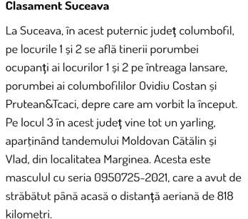

COLECȚIA MEA
Sunt pasionat de porumbei de la vârsta de 7 ani și am reușit să realizez o colecție foarte frumoasă și numeroasă.
REZULTATELE MELE
In anul 2021 am concurat primii pui fiind primul debut columbofil a fost greu, rezultate au fost decente dar cu experiență frumoasă.
In anul 2022 cu porumbei maturi am reușit sa mă remarc la nivel județean, provincial si național. A fost un moment de neuitat, datorita munci și pasiuni. Am întâlnit campioni si persoane cu experiența și rezultate anuale, având la fiecare concurs rezultate pe măsura.
- Loc.4 National din 15001 de porumbei 818 km
- Loc.3 provincial din 7037 porumbei 818 km
- Loc.3 județean din 4717 porumbei 818 km
- Loc.2 club Rădăuți din 1663 porumbei 818 km
- Loc.3 Suceava + Botoșani din 7037 porumbei
- Loc.3 Kaunas jud 2024
- Loc.3 Kaunas provincial 2024
- Loc.1 Kaunas club 2024
- Loc.3 Kaunas club 2024
- Loc.2 as maraton club 2024
- Loc.6 as maraton județ 2024
- Loc 16/13.798 de porumbei Lithuania 750km din 989 de crescători locul 3 , participând 6 județe
- Si multe alte rezultate cu diferiți porumbei
